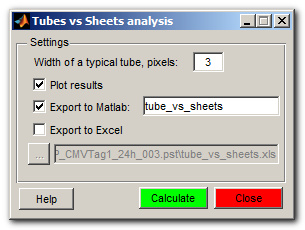
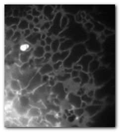
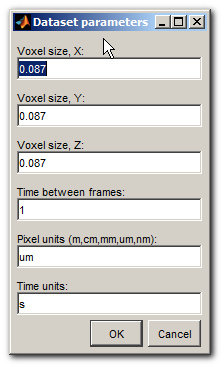
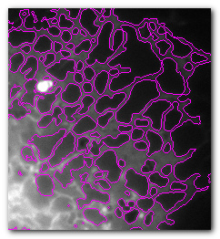
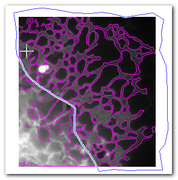
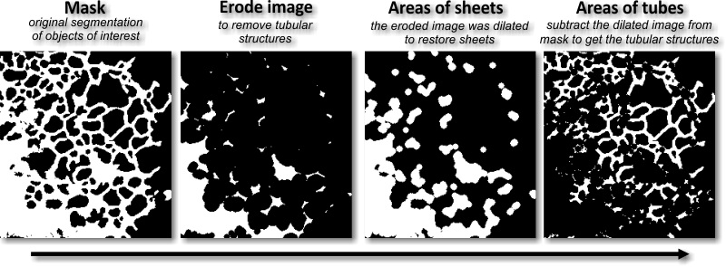
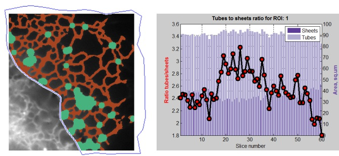

Tubes vs Sheets analysis
This plugin calculates ratio between tubes and sheets from the masked areas.
The results of the plugin may be seen on the screen or exported to the main Matlab workspace or to Excel.

Contents
How to Use
- 1. Load datasets, 2D or 3D.

- 2. Set the pixel size: Menu->Dataset->Parameters:

- 3.Segment objects of interest and assign them to the Mask layer. For example, the shown dataset was segmented using the random forest classifier: Menu->Tools->Random Forest Classifier

- 4. Use the ROI tools to select area for the analysis [ optional ].

- 5. Start ib_TubesVsSheets from Menu->Plugins
- 6. Define in pixels width of a typical tube profile and the way to report results.
- 7. Press the Calculate button. The function will first erode image to remove tubular components, that is followed with dilation to restore the sheets. The difference between the original mask and the generated sheets defines the tubular areas. The image below shows the idea of such analysis, the value for the width of a typical tube profile should be adjusted

- 8. The results are shown as a model with 2 materials: sheets and tubes.
